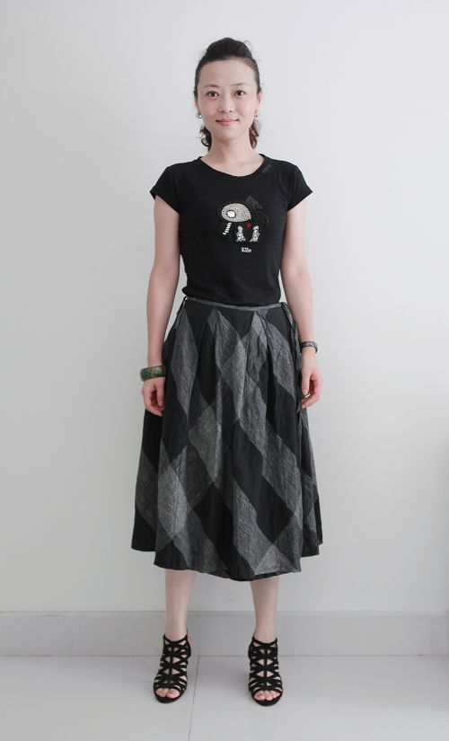

DRESS BLOG @ Sep 01, 2010
中午下班回家，在小区里遇到一位女孩儿，当时真想跳下车走到她面前对她说：“我能给你拍张照吗？”我摸着包里的手机和bloggie，暗自思付着。她穿着藏青色碎花收脚裤，中袖天蓝色衬衫塞在裤子里，披着头发，戴着一顶素色的帽子，与照片里的女孩风格相似，但更好看。

N年前DECOSTER棉麻长裙，复古吗？昨天晚上居然梦见这个品牌，价格涨到上万一件，挑啊挑啊，梦止于“迷你宝蓝色小拎包”，醒来后好生奇怪。

中午下班回家，在小区里遇到一位女孩儿，当时真想跳下车走到她面前对她说：“我能给你拍张照吗？”我摸着包里的手机和bloggie，暗自思付着。她穿着藏青色碎花收脚裤，中袖天蓝色衬衫塞在裤子里，披着头发，戴着一顶素色的帽子，与照片里的女孩风格相似，但更好看。
N年前DECOSTER棉麻长裙，复古吗？昨天晚上居然梦见这个品牌，价格涨到上万一件，挑啊挑啊，梦止于“迷你宝蓝色小拎包”，醒来后好生奇怪。

11 Responses to “DRESS BLOG”
2010-09-01
这张发型好像弄的不太合适，显得有点“岁月”，身材和搭配合适的没有话说！
2010-09-01
已经岁月了，哈哈哈~
2010-09-01
已经到了看山还是山看水还是水的境界了是吧？
2010-09-01
中午没注意到鞋子，好看的。
2010-09-02
哈哈，有点复古，不过显得更粗犷。
问好茶姑娘。
2010-09-02
觉得这裙子有点衣不称身的感觉，大了
2010-09-02
确切的说是裹裙，想大就大，想小就小，完全看你需要。
2010-09-02
太素了~~还是年轻人能穿~~这裹裙也就你能穿了，我穿就一苏联大妈。
2010-09-02
鞋子有点SM的劲儿。五花大绑。
2010-09-04
茶能说说相机的型号和镜头配置吗？
相片都好美
2010-09-04
CANON 5D MARK II+CANON 24-70MM F2.8
Leave A Reply
存档只读，评论已关闭。